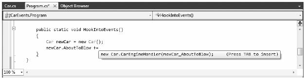
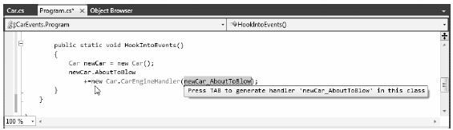

Delegates are fairly interesting constructs in that they enable objects in memory to engage in a two-way conversation. However, working with delegates in the raw can entail the creation of some boilerplate code (defining the delegate, declaring necessary member variables, and creating custom registration and unregistration methods to preserve encapsulation, etc.).
Moreover, when you use delegates in the raw as your application’s callback mechanism, if you do not define a class’s delegate member variables as private, the caller will have direct access to the delegate objects. In this case, the caller could reassign the variable to a new delegate object (effectively deleting the current list of functions to call) and, worse yet, the caller would be able to directly invoke the delegate’s invocation list. To illustrate this problem, consider the following reworking (and simplification) of the previous CarDelegate example:
public class Car { public delegate void CarEngineHandler(string msgForCaller); // Now a public member! public CarEngineHandler listOfHandlers; // Just fire out the Exploded notification. public void Accelerate(int delta) { if (listOfHandlers != null) listOfHandlers("Sorry, this car is dead..."); } }
Notice that we no longer have private delegate member variables encapsulated with custom registration methods. Because these members are indeed public, the caller can directly access the listOfHandlers member variable and reassign this type to new CarEngineHandler objects and invoke the delegate whenever it so chooses:
class Program { static void Main(string[] args) { Console.WriteLine("***** Agh! No Encapsulation! *****\n"); // Make a Car. Car myCar = new Car(); // We have direct access to the delegate! myCar.listOfHandlers = new Car.CarEngineHandler(CallWhenExploded); myCar.Accelerate(10); // We can now assign to a whole new object... // confusing at best. myCar.listOfHandlers = new Car.CarEngineHandler(CallHereToo); myCar.Accelerate(10); // The caller can also directly invoke the delegate! myCar.listOfHandlers.Invoke("hee, hee, hee..."); Console.ReadLine(); } static void CallWhenExploded(string msg) { Console.WriteLine(msg); } static void CallHereToo(string msg) { Console.WriteLine(msg); } }
Exposing public delegate members breaks encapsulation, which not only can lead to code that is hard to maintain (and debug), but could also open your application to possible security risks! Here is the output of the current example:
***** Agh! No Encapsulation! ***** Sorry, this car is dead... Sorry, this car is dead... hee, hee, hee...
Obviously, you would not want to give other applications the power to change what a delegate is pointing to or to invoke the members without your permission.
Source Code The PublicDelegateProblem project is located under the Chapter 11 subdirectory.
As a shortcut, so you don’t have to build custom methods to add or remove methods to a delegate’s invocation list, C# provides the event keyword. When the compiler processes the event keyword, you are automatically provided with registration and unregistration methods as well as any necessary member variables for your delegate types. These delegate member variables are always declared private, and therefore they are not directly exposed from the object firing the event. To be sure, the event keyword is little more than syntactic sugar in that it simply saves you some typing time.
Defining an event is a two-step process. First, you need to define a delegate type that will hold the list of methods to be called when the event is fired. Next, you declare an event (using the C# event keyword) in terms of the related delegate type.
To illustrate the event keyword, create a new Console Application named CarEvents. In this iteration of the Car class, we will define two events named AboutToBlow and Exploded. These events are associated to a single delegate type named CarEngineHandler. Here are the initial updates to the Car class:
public class Car { // This delegate works in conjunction with the // Car's events. public delegate void CarEngineHandler(string msg); // This car can send these events. public event CarEngineHandler Exploded; public event CarEngineHandler AboutToBlow; ... }
Sending an event to the caller is as simple as specifying the event by name, along with any required parameters as defined by the associated delegate. To ensure that the caller has indeed registered with the event, you will want to check the event against a null value before invoking the delegate’s method set. With these points in mind, here is the new iteration of the Car’s Accelerate() method:
public void Accelerate(int delta) { // If the car is dead, fire Exploded event. if (carIsDead) { if (Exploded != null) Exploded("Sorry, this car is dead..."); } else { CurrentSpeed += delta; // Almost dead? if (10 == MaxSpeed - CurrentSpeed && AboutToBlow != null) { AboutToBlow("Careful buddy! Gonna blow!"); } // Still OK! if (CurrentSpeed >= MaxSpeed) carIsDead = true; else Console.WriteLine("CurrentSpeed = {0}", CurrentSpeed); } }
With this, you have configured the car to send two custom events without having to define custom registration functions or declare delegate member variables. You will see the usage of this new automobile in just a moment, but first, let’s check the event architecture in a bit more detail.
A C# event actually expands into two hidden methods, one having an add_ prefix, the other having a remove_ prefix. Each prefix is followed by the name of the C# event. For example, the Exploded event results in two hidden methods named add_Exploded() and remove_Exploded(). If you were to check out the CIL instructions behind add_AboutToBlow(), you would find a call to Delegate.Combine() method. Consider the partial CIL code:
.method public hidebysig specialname instance void
add_AboutToBlow(class CarEvents.Car/CarEngineHandler 'value') cil managed
{
...
call class [mscorlib]System.Delegate
[mscorlib]System.Delegate::Combine(
class [mscorlib]System.Delegate, class [mscorlib]System.Delegate)
...
}
As you would expect, remove_AboutToBlow() will call Delegate.Remove() on your behalf:
.method public hidebysig specialname instance void
remove_AboutToBlow(class CarEvents.Car/CarEngineHandler 'value')
cil managed synchronized
{
...
call class [mscorlib]System.Delegate
[mscorlib]System.Delegate::Remove(
class [mscorlib]System.Delegate, class [mscorlib]System.Delegate)
...
}
Finally, the CIL code representing the event itself makes use of the .addon and .removeon directives to map the names of the correct add_XXX() and remove_XXX() methods to invoke:
.event CarEvents.Car/EngineHandler AboutToBlow
{
.addon void CarEvents.Car::add_AboutToBlow
(class CarEvents.Car/CarEngineHandler)
.removeon void CarEvents.Car::remove_AboutToBlow
(class CarEvents.Car/CarEngineHandler)
}
Now that you understand how to build a class that can send C# events (and are aware that events are little more than a typing time-saver), the next big question is how to listen to the incoming events on the caller’s side.
C# events also simplify the act of registering the caller-side event handlers. Rather than having to specify custom helper methods, the caller simply makes use of the += and -= operators directly (which triggers the correct add_XXX() or remove_XXX() method in the background). When you wish to register with an event, follow the pattern shown here:
// NameOfObject.NameOfEvent += new RelatedDelegate(functionToCall); // Car.EngineHandler d = new Car.CarEventHandler(CarExplodedEventHandler) myCar.Exploded += d;
When you wish to detach from a source of events, use the -= operator, using the following pattern
// NameOfObject.NameOfEvent -= new RelatedDelegate(functionToCall); // myCar.Exploded -= d;
Given these very predictable patterns, here is the refactored Main() method, now using the C# event registration syntax:
class Program { static void Main(string[] args) { Console.WriteLine("***** Fun with Events *****\n"); Car c1 = new Car("SlugBug", 100, 10); // Register event handlers. c1.AboutToBlow += new Car.CarEngineHandler(CarIsAlmostDoomed); c1.AboutToBlow += new Car.CarEngineHandler(CarAboutToBlow); Car.CarEngineHandler d = new Car.CarEngineHandler(CarExploded); c1.Exploded += d; Console.WriteLine("***** Speeding up *****"); for (int i = 0; i < 6; i++) c1.Accelerate(20); // Remove CarExploded method // from invocation list. c1.Exploded -= d; Console.WriteLine("\n***** Speeding up *****"); for (int i = 0; i < 6; i++) c1.Accelerate(20); Console.ReadLine(); } public static void CarAboutToBlow(string msg) { Console.WriteLine(msg); } public static void CarIsAlmostDoomed(string msg) { Console.WriteLine("=> Critical Message from Car: {0}", msg); } public static void CarExploded(string msg) { Console.WriteLine(msg); } }
To even further simplify event registration, you can use method group conversion. Consider the following iteration of Main():
static void Main(string[] args) { Console.WriteLine("***** Fun with Events *****\n"); Car c1 = new Car("SlugBug", 100, 10); // Register event handlers. c1.AboutToBlow += CarIsAlmostDoomed; c1.AboutToBlow += CarAboutToBlow; c1.Exploded += CarExploded; Console.WriteLine("***** Speeding up *****"); for (int i = 0; i < 6; i++) c1.Accelerate(20); c1.Exploded -= CarExploded; Console.WriteLine("\n***** Speeding up *****"); for (int i = 0; i < 6; i++) c1.Accelerate(20); Console.ReadLine(); }
Visual Studio 2010 offers assistance with the process of registering event handlers. When you apply the += syntax during event registration, you will find an IntelliSense window displayed, inviting you to hit the Tab key to autocomplete the associated delegate instance (see Figure 11-2)
Figure 11-2. Delegate selection IntelliSense
After you hit the Tab key, you are invited to enter the name of the event handler to be generated (or simply accept the default name) as shown in Figure 11-3.
Figure 11-3. Delegate target format IntelliSense
When you hit the Tab key again, you will be provided with stub code in the correct format of the delegate target (note that this method has been declared static due to the fact that the event was registered within the static Main() method):
static void newCar_AboutToBlow(string msg) { // Add your code! }
IntelliSense is available to all .NET events in the base class libraries. This IDE feature is a massive time-saver, given that it saves you from having to search the .NET help system to figure out both the correct delegate to use with a particular event and the format of the delegate target method.
Source Code The CarEvents project is located under the Chapter 11 subdirectory.
Truth be told, there is one final enhancement we could make to the current iteration of the Car class that mirrors Microsoft’s recommended event pattern. As you begin to explore the events sent by a given type in the base class libraries, you will find that the first parameter of the underlying delegate is a System.Object, while the second parameter is a descendent of System.EventArgs.
The System.Object argument represents a reference to the object that sent the event (such as the Car), while the second parameter represents information regarding the event at hand. The System.EventArgs base class represents an event that is not sending any custom information:
public class EventArgs { public static readonly System.EventArgs Empty; public EventArgs(); }
For simple events, you can pass an instance of EventArgs directly. However, when you wish to pass along custom data, you should build a suitable class deriving from EventArgs. For our example, assume you have a class named CarEventArgs, which maintains a string representing the message sent to the receiver:
public class CarEventArgs : EventArgs { public readonly string msg; public CarEventArgs(string message) { msg = message; } }
With this, you would now update the CarEngineHandler delegate type definition as follows (the events would be unchanged):
public class Car { public delegate void CarEngineHandler(object sender, CarEventArgs e); ... }
Here, when firing the events from within the Accelerate() method, you would now need to supply a reference to the current Car (via the this keyword) and an instance of the CarEventArgs type. For example, consider the following partial update:
public void Accelerate(int delta) { // If the car is dead, fire Exploded event. if (carIsDead) { if (Exploded != null) Exploded(this, new CarEventArgs("Sorry, this car is dead...")); } ... }
On the caller’s side, all you would need to do is update your event handlers to receive the incoming parameters and obtain the message via the read-only field. For example:
public static void CarAboutToBlow(object sender, CarEventArgs e) { Console.WriteLine("{0} says: {1}", sender, e.msg); }
If the receiver wishes to interact with the object that sent the event, you can explicitly cast the System.Object. From this reference, you can make use of any public member of the object that sent the event notification:
public static void CarAboutToBlow(object sender, CarEventArgs e) { // Just to be safe, perform a // runtime check before casting. if (sender is Car) { Car c = (Car)sender; Console.WriteLine("Critical Message from {0}: {1}", c.PetName, e.msg); } }
Source Code The PrimAndProperCarEvents project is located under the Chapter 11 subdirectory.
Given that so many custom delegates take an object as the first parameter and an EventArgs descendent as the second, you could further streamline the previous example by using the generic EventHandler<T> type, where T is your custom EventArgs type. Consider the following update to the Car type (notice how we no longer need to define a custom delegate type at all):
public class Car { public event EventHandler<CarEventArgs> Exploded; public event EventHandler<CarEventArgs> AboutToBlow; ... }
The Main() method could then use EventHandler<CarEventArgs> anywhere we previously specified CarEventHandler (or, once again, use method group conversion):
static void Main(string[] args) { Console.WriteLine("***** Prim and Proper Events *****\n"); // Make a car as usual. Car c1 = new Car("SlugBug", 100, 10); // Register event handlers. c1.AboutToBlow += CarIsAlmostDoomed; c1.AboutToBlow += CarAboutToBlow; EventHandler<CarEventArgs> d = new EventHandler<CarEventArgs>(CarExploded); c1.Exploded += d; ... }
Great! At this point, you have seen the core aspects of working with delegates and events in the C# language. While you could use this information for just about all of your callback needs, we will wrap up this chapter with a look at some final simplifications, specifically anonymous methods and lambda expressions.
Source Code The PrimAndProperCarEvents (Generic) project is located under the Chapter 11 subdirectory.